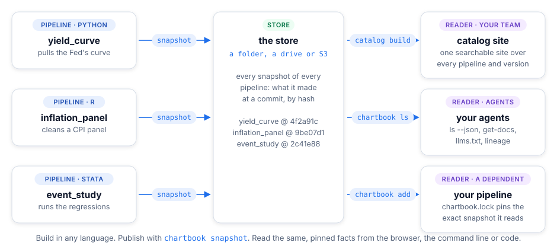
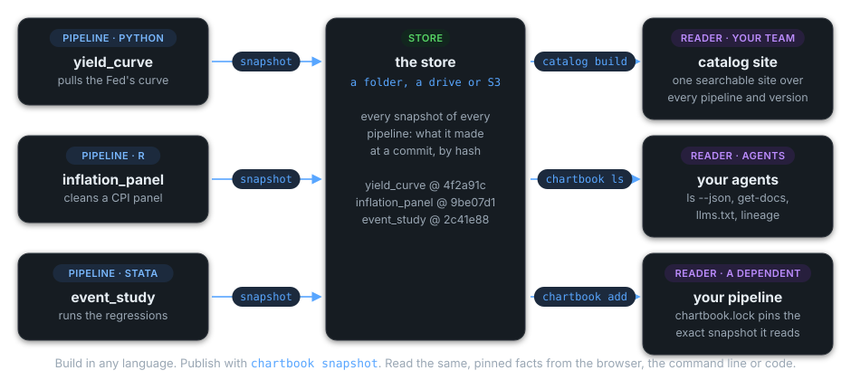

ChartBook#
Data pipelines with provenance
Know exactly where every number came from.
ChartBook connects your team's data pipelines, in any language, so each one builds on another's exact, versioned output. Every chart traces back to its sources, every input is verified by hash, and everything lands in one catalog your team browses and your agents build on.
pip install chartbook


Every chart gets a page: the chart, its write-up, and exactly what it was made from, with the hash of that data in this build. This one is the Quickstart's.
What ChartBook does#
Build on another pipeline’s exact output, the way you depend on a package.
chartbook add acme/rates pins its newest snapshot in chartbook.lock, and what you read
changes only when you run chartbook update.
Every dataframe, chart and model records what it was made from, by content hash.
chartbook lineage walks the chain back to the first source and checks every hash on the way.
A snapshot keeps the exact bytes a pipeline made, labelled with its commit. Rebuild from the
same inputs, and put back an output that took a day to compute with chartbook restore.
Many pipelines become one catalog: a searchable website for your team, and an index, an
llms.txt and a command line your agents work from.
Ask the catalog from the command line#
What a person browses on the site, a script or an agent can ask for at the terminal: which datasets there are, what each one holds, and the data itself.
chartbook ls lists what the catalog holds, chartbook get-docs
prints a dataset's page with its columns, chartbook path hands its file to R, Stata or
a shell, and data.load reads it in Python. This catalog is the
tutorial's.
For your team and for your agents#
The catalog is one set of facts with two ways in. A person browses the site; an agent asks the command line the same questions and gets the same answers.
Your team, in the browser |
Your agents, from the command line |
|
|---|---|---|
What is there? |
The catalog’s home page and search |
|
What is it? |
The dataset’s or chart’s page |
|
Use it |
Copy the snippet on the page |
|
Can I trust it? |
The Provenance table and the Versions page |
|
chartbook install claude-skill teaches Claude Code all of this, and every site ChartBook builds
ships an llms.txt at its root.
In any language#


A pipeline’s build is whatever command you name: a Python script, R, Stata,
SQL, a Makefile. ChartBook runs it, records what it made, and lets the next pipeline read it,
from Python with data.load() or from anything else with chartbook path.
A pipeline, in three files#
A pipeline is a folder: a manifest that says what it makes, the code that makes it, and a README. The Quickstart builds this one.
[project]
name = "My Pipeline"
description = "A demo pipeline: two random walks and a chart of them"
[dataframes.walks]
name = "Random Walks"
description = "Two simulated random walk series"
sources = ["Simulated"]
path = "./_data/walks.parquet"
date_col = "date"
docs = "365 daily observations of two cumulative-sum series."
[charts.random_walks]
name = "Two Random Walks"
description = "Cumulative sums of daily standard-normal draws"
dataframe = "walks"
path = "./_output/random_walks.html"
docs = "Both series are pure noise. Any pattern you see is your brain's doing."
import numpy as np
import pandas as pd
import chartbook
from chartbook import data
rng = np.random.default_rng(seed=42)
df = pd.DataFrame({
"date": pd.date_range("2024-01-01", periods=365, freq="D"),
"walk_a": rng.standard_normal(365).cumsum() + 100,
"walk_b": rng.standard_normal(365).cumsum() + 100,
})
df.to_parquet(data.path("walks")) # chartbook.toml says where "walks" goes
chartbook.plotting.line(
df, x="date", y=["walk_a", "walk_b"], title="Two Random Walks",
).save(chart_id="random_walks", output_dir="_output")
$ python src/build_chart.py # writes _data/walks.parquet and the chart
$ chartbook docs build # writes the site, and index.json beside it
$ chartbook docs open
Once it takes a snapshot (chartbook snapshot), any other pipeline can read that dataset by
name, pinned to the exact bytes this one made:
from chartbook import data
walks = data.load("my_pipeline:walks") # the pinned copy, never the other folder
Where next#
Build a pipeline and its site in five minutes, from three files.
Download a real catalog of public data, browse it, and point your agent at it.
Pin exactly what another pipeline built, and read it by name.
How an agent finds, reads and builds on your team’s work.